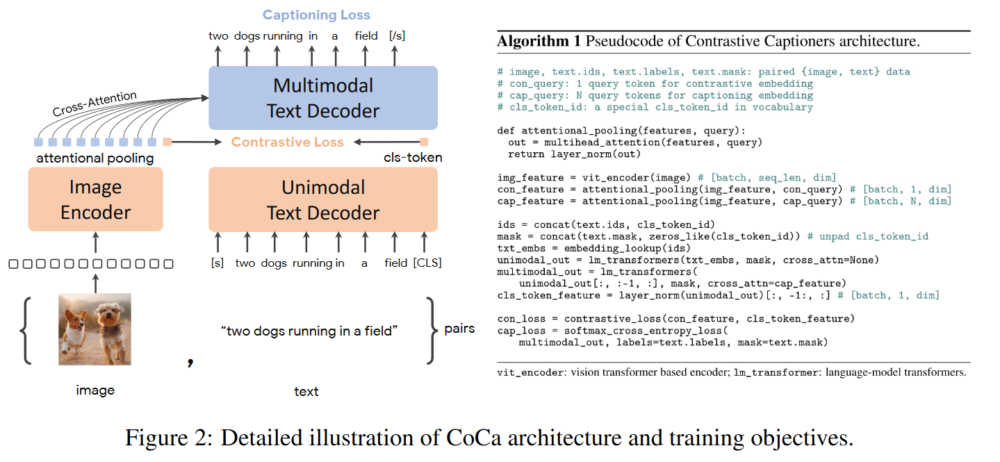
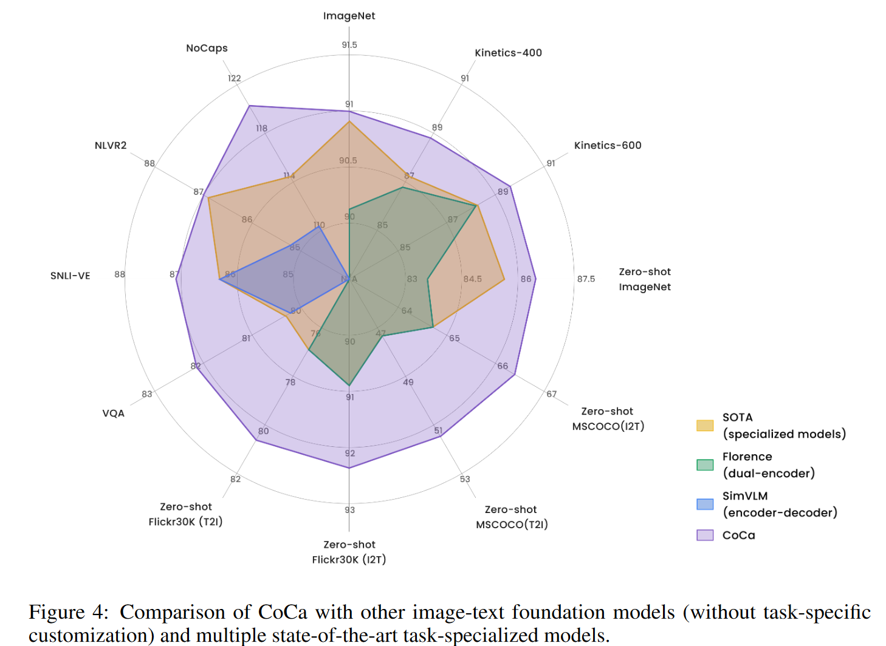
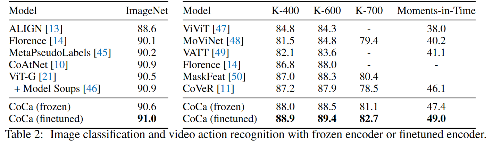

多模态系列(五)- COCA
论文地址：CoCa: Contrastive Captioners are Image-Text Foundation Models
代码地址：CoCa
转载自：多模态系列论文–CoCa 详细解析_coca paper-CSDN博客
多模态系列(五)- COCA
1 摘要
CoCa代表Contrastive Captioners的缩写，代表模型用两个目标函数训练出来的，一个是Contrastive Loss，一个是Captioning Loss。本文因为数据集更大，模型也更大，所以它的效果很好，在多模态所有的任务均SOTA，而且在单模态里，在ImageNet上也得到了90以上的Top1准确度，在视频动作识别领域，在Paper with Code上CoCa在K400、K600、K700这些数据集上排名前三。
2. 网络结构

CoCa是ALBEF的一个后续工作，它与ALBEF的模型类似，左边是一个Image Encoder，右边是一个Text Decoder，注意，这里是Decoder不是Encoder。从左右来看还是左边图像分支，右边文本分支，文本分支分两部分，下面用来抽取Unimodel的文本特征，上面做多模态的特征。整个模型就是用两个目标函数训出来的，一个是ITC，一个是Language Modeling Loss，也就是Contrastive和Captioning，具体步骤如下：
- 图像通过Image Encoder，得到一系列的Token，文本通过文本的解码器，得到一系列的文本特征。
- 图像的CLS Token和文本的CLS Token计算ITC loss
- 图像其他的Token做Attention Pooling，然后再传到多模态的Text Decoder里做Cross Attention，这样把视觉和文本的特征融合在一起了。多模态的特征用Captioning Loss训练，也就是BLIP、GPT用的Language Modeling Loss。
所以CoCa的布局跟ALBEF是一模一样的，区别是：
- 在图像分支做Attentional Pooling，这一部分是可学的，这种可学的Pooling方式能够针对不同的任务学到更好的特征，从而能对模态学习产生更好的影响。
- 不论是单模态的文本特征的学习还是多模态的特征学习，整个文本端统一都用Decoder训练目标函数，使用Captioning的Loss，文本的输入从一开始前面的Self-Attention Layer就是Causal的（也就是mask住一个句子后半部分，然后用前半部分去预测句子后面内容）。因为作者在超大的几十亿的数据集上去做预训练，所以文本如何mask关系不大，模型应该是什么都见过。
Coca的模型实现并不难，但是想复现它难度非常大。原因是：
- 模型大：虽然很简单，但它训练出来最大的模型参数量已经达到了2.1 billion，算是视觉或者多模态里面非常大的一个模型（当然在NLP那边已经有几十亿上百亿的模型）
- 训练的数据集∶作者不只用了之前训练Align用的多模态的数据集，同时还把GFT 3 billion（google私有数据）图像分类的数据集转化成了多模态数据集，加在一起有几十亿的训练数据，所以不论是模型还是这个数据都远超之前所有工作的这个scale，效果也是非常明显的。
3. 损失函数
- ITC loss：Contrastive Loss，图像的CLS Token和文本的CLS Token计算ITC loss。
- LM(Captioning) Loss：单模态、多模态的文本特征学习，计算LM Loss。
文本端统一都用Decoder训练目标函数，并且只用一个Captioning Loss而不用ITM Loss，原因是作者这里想解决训练的效率问题，之前不论是ALBEF还是VLMO，因为算各种的目标函数，往往一个Training Iteration要forward这个模型好几次，无形中增加了模型训练的时间长度，比如训练100个Epoch，其实forward三次之后相当于训练了300个Epoch。作者这里为了让ITC Loss和Captioning Loss能同时计算，所以文本的输入从刚开始就必须是Causal的，这样通过Unimodal Text Decoder出来的特征能直接做ITC Loss，同样的输入得到的多模态特征也直接能做Captioning Loss。这样一个Iteration就是只forward一次，训练时间就会降低一些。
4. 实验结果

CoCa画了一张图，里面多边形的每一个顶点代表了一个数据集，或者说是一个任务。黄色圈指的是之前在所有的这些数据集上不同的方法表现出来的SOTA的performance。CoCa就是在这些State of Art的外面的紫色的框，就是CoCa的性能比之前所有的方法在这些所有的任务和数据集上都取得了更好的效果，而且在大部分数据集上都获得大幅度的提升

CoCa用表格2展现了它在各个数据集上的表现。
5. 总结
其实不论用ALBEF或者CoCa模型结构，还是像VLMO、 BLIP一样共享参数都是可以的。当把这个模型做大，数据集做大后，模型性能都差不多，其实往往最后拼的都是数据。